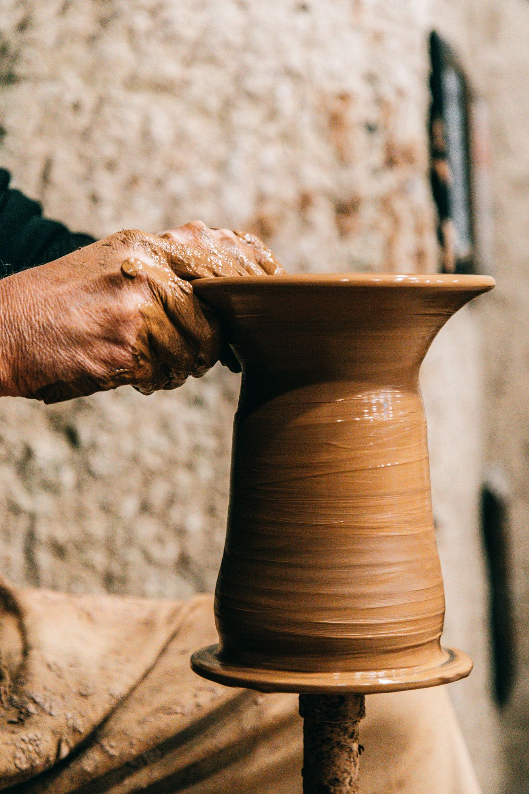
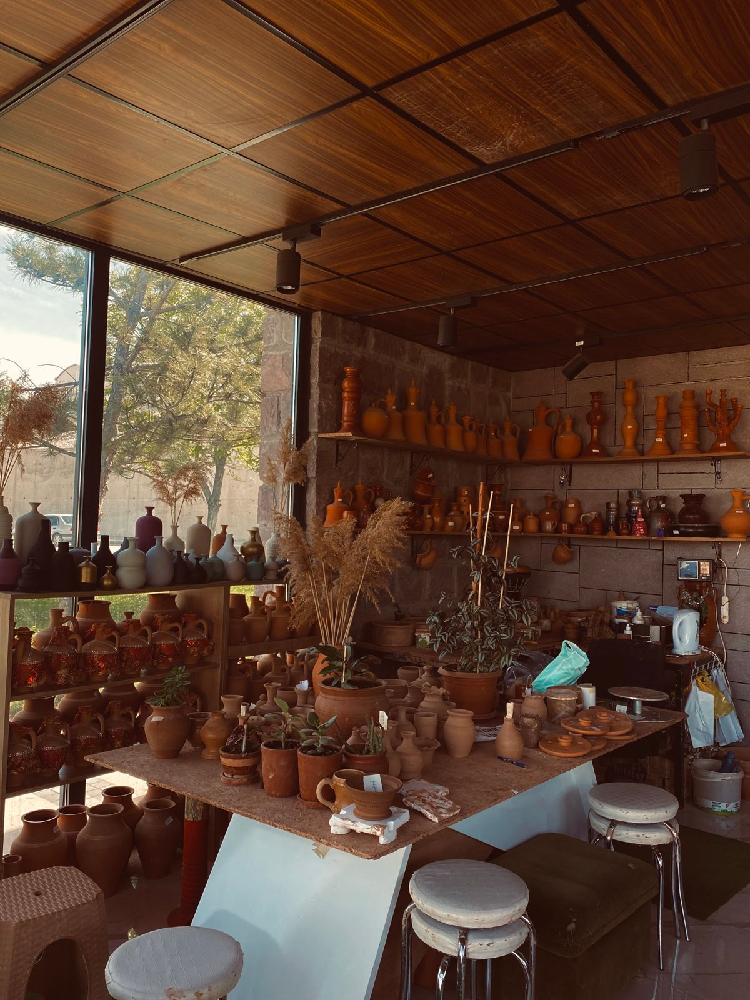
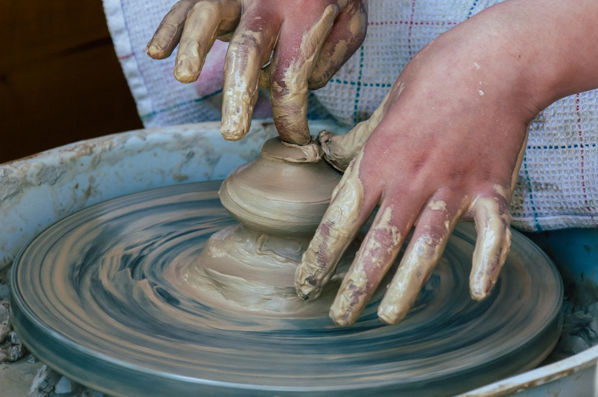

About · Khavda, Kutch
The fourth pair of hands at this wheel
My name is Salim Kumbhar. The clay pit behind our house in Khavda has fed this family for four generations, and everything I sell is dug from it, thrown on the wheel my father built, and fired in the wood kiln he raised brick by brick.
My great-grandfather carried clay from the pit in baskets. My grandfather threw the water pots the village drank from. My father, Yusuf, built the kiln in 1989 and taught me the two rules this workshop still runs on: weigh everything, and write it in the kiln book. Every load since 1989 is in those books — what went in, what came out, what cracked. That is why the figures on this site are counts and not guesses.
I took the wheel full-time at nineteen. My wife, Rukhsana, paints the white line-work on the wedding pots and keeps the order slate; my nephews wedge clay in the season and throw diyas beside me. In October the yard belongs to Diwali. The rest of the year it belongs to matkas, planters, kulhads for the tea stalls on the Bhuj road, and whatever a neighbour knocks and asks for.
Nothing here is glazed, and that is a decision I stand by. Glaze seals the clay; unglazed clay breathes, sweats and cools. It also asks something of you — a soak before first use, no soap inside, a dry shelf. The care notes below are the whole contract.


Process
From pit to kiln, in five stages
Nothing on this page is a secret. If you buy a pot from me you are buying these five stages, in this order, with these timings.
1 · Digging & slaking
Clay is dug from the family pit after the monsoon, when the face is workable. It is broken up, soaked in the slaking tank for two days, sieved through mesh to take out stones and roots, then dried on the yard back to a throwable stiffness. A tonne of dug earth gives roughly 800 kilos of clean clay — the rest is stone, sand and loss, and it goes back to the pit.
2 · Wedging
Every lump is wedged — kneaded on the slate table — to even the moisture and push out air. An air pocket left in a wall becomes steam in the kiln, and steam takes the bottom out of a pot. Wedging is the nephews' first job and my last check.
3 · Throwing
Big pieces are thrown one to a lump; diyas and kulhads come off the hump, centred one after another from a single cone of clay. Walls are pulled to the thickness the drying table below demands — no thinner for speed, no thicker for fear.
4 · Drying — the stage that cannot be hurried
Wet clay shrinks as it dries, and a thick base dries slower than a thin rim. Rush a piece into the kiln with water still in the wall and it cracks or bursts. So drying is counted in days, by thickness:
| Wall thickness | Pieces | Drying before firing |
|---|---|---|
| Up to 6 mm | Diya, kulhad | 3 days |
| 8–10 mm | Garba pot, planter | 5 days |
| 12 mm and over | Matka base | 7 days |
5 · Firing — the kiln's day
The kiln is loaded at dawn and lit gently. The first three hours climb slowly to 200°C while the last of the water smokes out of the clay — force this stage and the steam does its damage. Then the fire is fed hard through the afternoon to 950°C by evening, held there one hour, and the kiln is sealed and left to cool overnight. We open it the next morning and count. Eight in every hundred pieces crack or warp, across forty years of kiln books; that is the figure the planner on the home page throws extra for, and it is my cost, never yours.
Care
Looking after unglazed terracotta
- Matka, first use: fill it and let it stand overnight. The clay drinks, the pores settle, and from the second day the sweating — and the cooling — begins.
- Cleaning: hot water and a coconut-coir scrub. No soap inside unglazed ware; the clay holds the taste of it.
- Diyas: soak for two hours before Diwali night. A soaked diya drinks less oil and the flame stands longer.
- Storage: dry, mouth down, off a damp floor. Terracotta that sits wet grows a white salt bloom — harmless, and it brushes off.
- The tap test: a sound pot rings when you tap it with a knuckle. A dull thud means a hairline crack — retire that pot to a planter and it will serve another twenty years.
